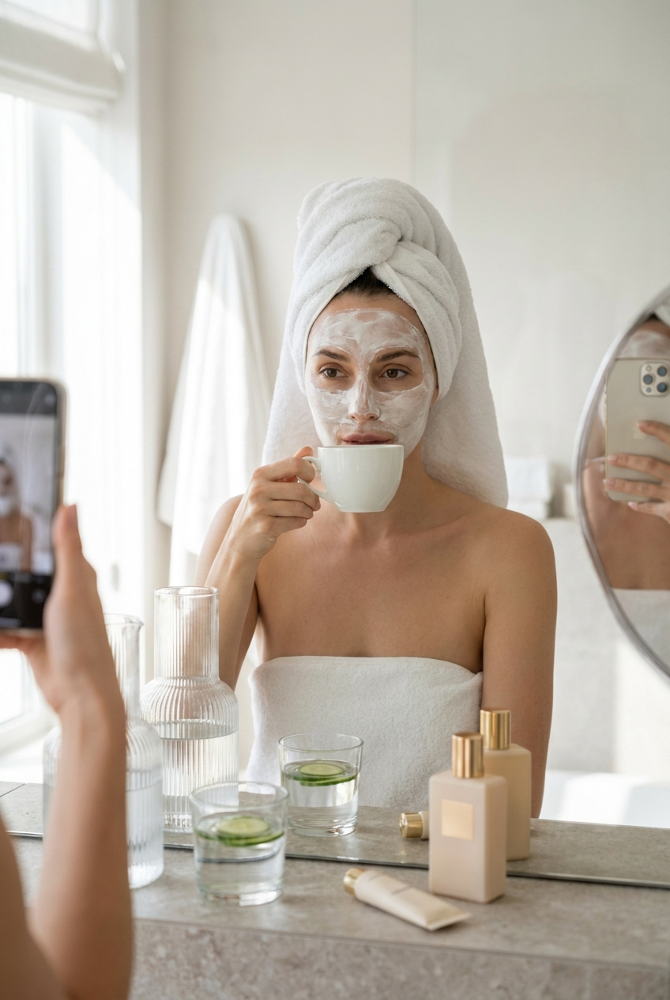
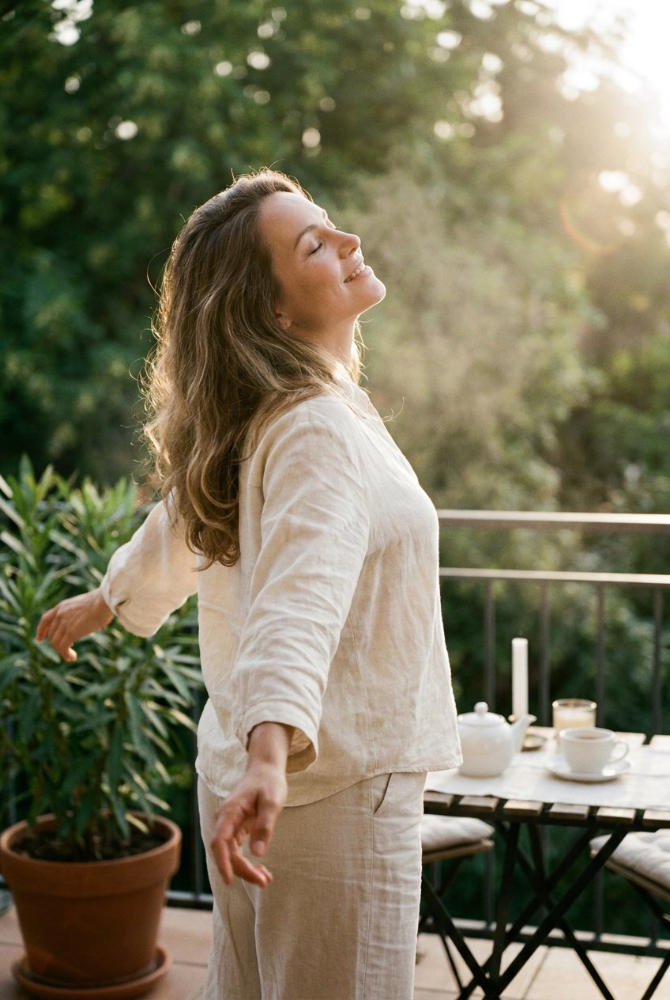
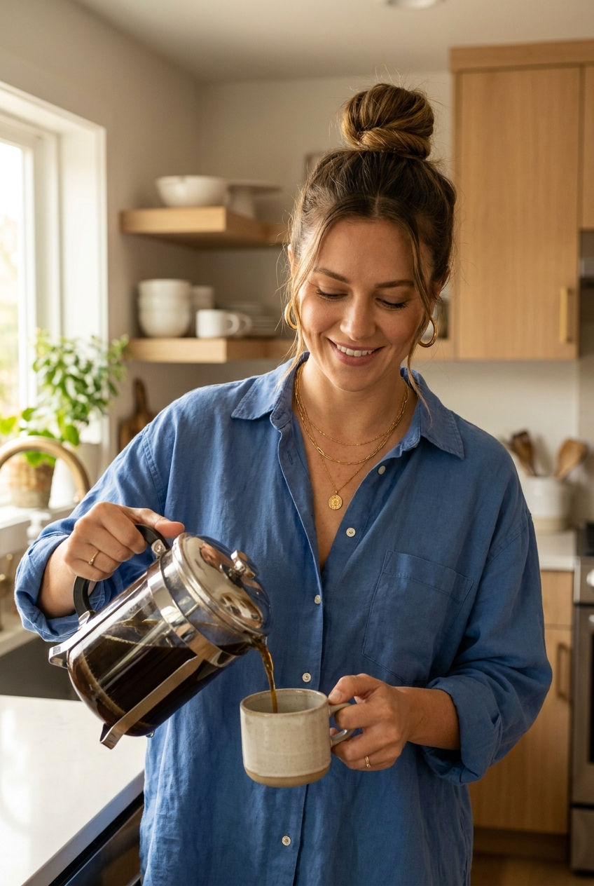
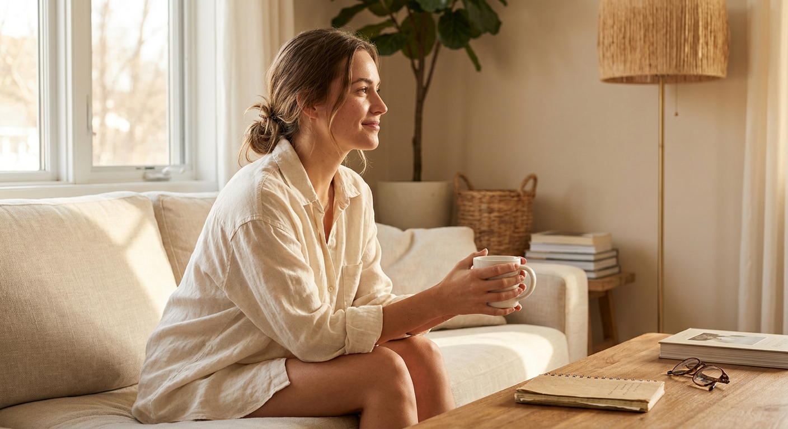
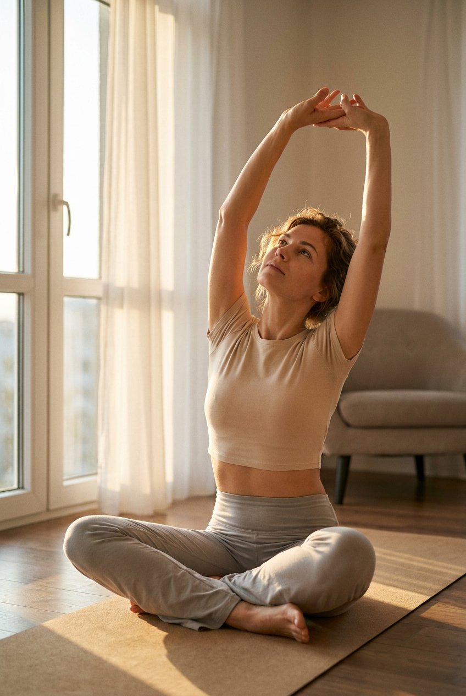
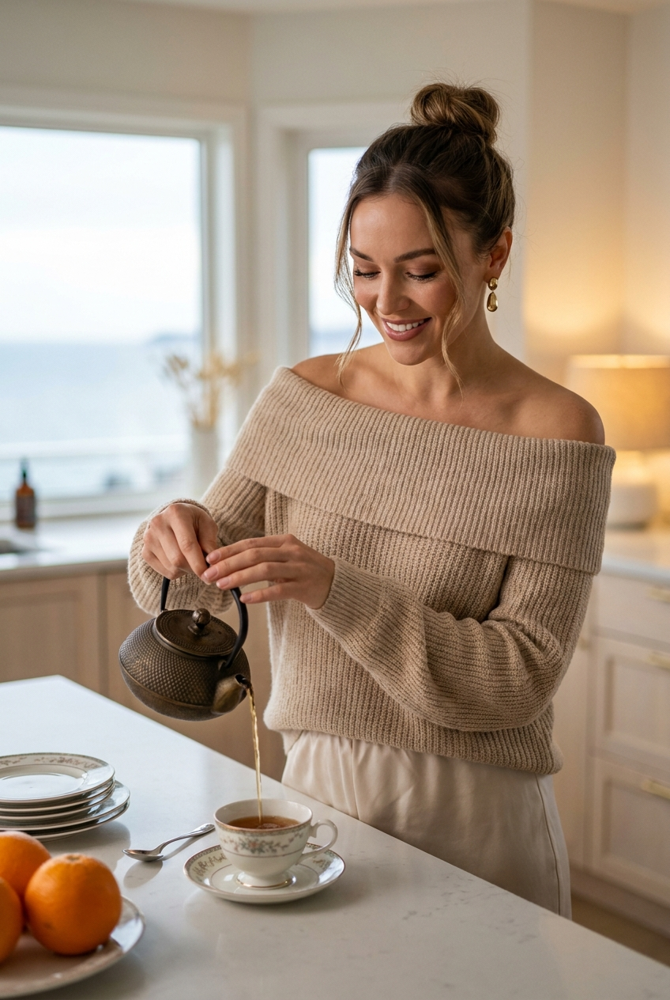
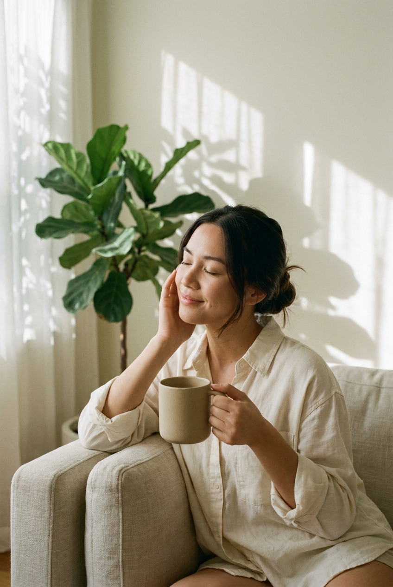
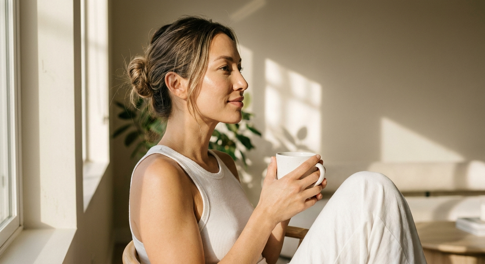
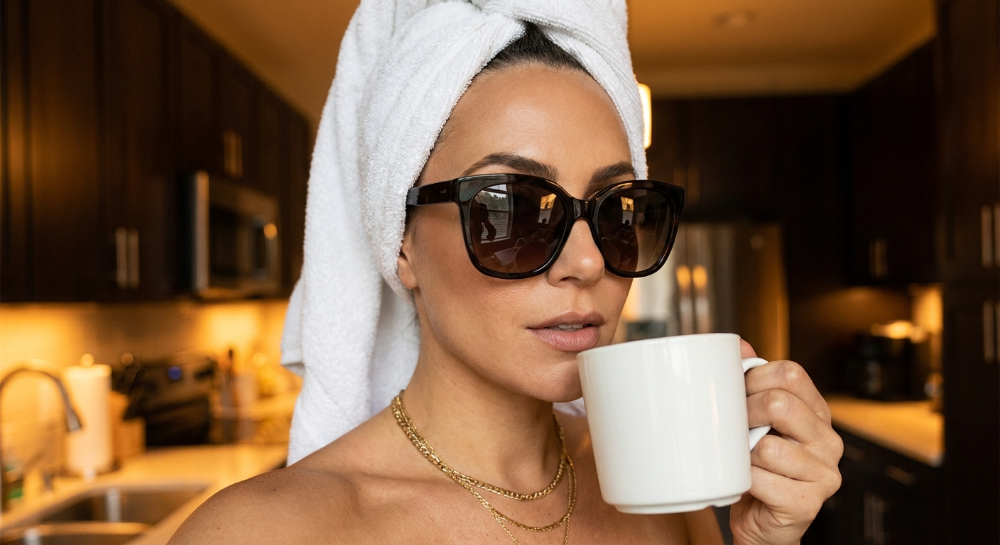
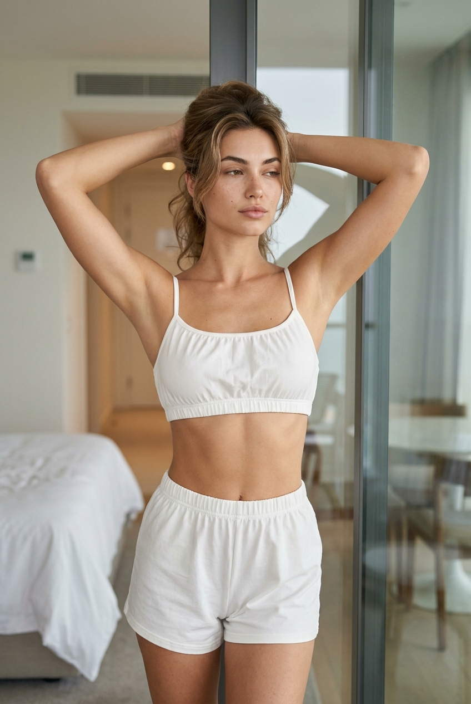

Утренняя ИИ-фотосессия: 10 промптов для нейросети

Утренние фотографии часто выглядят одинаково: чашка кофе, окно и случайный свет, который не спасает кадр. Генерация помогает собрать нужную сцену заранее — с продуманной позой, одеждой, композицией и настроением.
В подборке — 10 сценариев для спокойной утренней фотосессии: от зеркального селфи в ванной и домашнего ухода до йоги, завтрака, террасы и fashion-кадра у стеклянной двери.
Как сгенерировать такое фото: пошагово
Нужен снимок анфас при ровном свете, лицо в кадре целиком, без тёмных очков и головных уборов. Разрешение от 1000 пикселей по короткой стороне. Чем чётче исходник, тем точнее модель повторит черты.
Выберите сценарий ниже и нажмите «Копировать» — текст уйдёт в буфер целиком, вместе с командой сохранения внешности. Эта команда стоит первой строкой и отвечает за то, чтобы на выходе было ваше лицо, а не случайное.
Кнопка «Сгенерировать» рядом с каждым промптом открывает модель в новой вкладке. Nano Banana Pro работает с референсом лица — в отличие от моделей, которые генерируют портрет с нуля и узнаваемость теряют.
Промпт — в поле ввода, портрет — через загрузку референса. Порядок значения не имеет, но без референса команда сохранения внешности работать не будет: модели нечего сохранять.
Для сторис и ленты берите 9:16, для превью и обложек — 4:3. Первый результат редко идеален: если поза или свет ушли не туда, поправьте соответствующую часть промпта и запустите заново. Обычно хватает двух-трёх итераций.
10 промптов для генерации
1. Утренний уход у зеркала
Строго сохранить внешность по загруженному референсу: черты лица, пропорции, мимику и текстуру кожи без изменений. Фотореалистичный beauty self-care кадр в вертикальном формате: утренний ритуал в ванной, премиальный минимализм и атмосфера домашнего спа. Мягкий рассеянный дневной свет, реалистичные текстуры махрового полотенца, стекла, огуречных ломтиков и кремовой маски. Женщина стоит перед большим зеркалом, камера направлена прямо или немного сбоку; в центре видны она сама и отражение с телефоном. На столешнице раковины расположены стеклянные ёмкости, бокалы или стаканы с огурцами, флакон парфюма, крем и тюбик с крышкой — без логотипов и читаемых надписей. В руках белая керамическая чашка. Вертикальная композиция, высокая детализация, естественная кожа, аккуратная мимика, без пластиковой ретуши. Съёмка на 50 мм, f/2.8, мягкая глубина резкости.
2. Свобода на утренней террасе

Строго сохранить внешность по загруженному референсу: черты лица, пропорции, мимику и текстуру кожи без изменений. Фотореалистичная lifestyle-сцена на открытой террасе или балконе в тихий золотой час. Dreamy film look, тёплая контровая подсветка, лёгкая дымка в воздухе, натуральные цвета и мягкое боке. Вертикальный кадр: женщина показана в ракурсе 3/4 со спины и в профиль. Она подняла подбородок, слегка запрокинула голову, прищурила глаза и наслаждается прохладным воздухом. Руки разведены в стороны, локти немного согнуты, кисти расслаблены, анатомия корректная. За ограждением — густая зелень деревьев и кустарников, сад и решётка террасы. Внизу слева стоит большой горшок с растением, справа на террасе видна небольшая зона отдыха с пледом и столиком. Натуральная кожа, живое выражение лица, объектив 85 мм, f/2, мягкий бэклайт.
3. Кофе на светлой кухне

Строго сохранить внешность по загруженному референсу: черты лица, пропорции, мимику и текстуру кожи без изменений. Фотореалистичный портрет молодой женщины на светлой современной кухне у мраморной столешницы. Она улыбается и аккуратно наливает кофе из стеклянного или металлического кувшина в керамическую чашку; в момент съёмки хорошо видны тонкая струя напитка, движение руки и реалистичные блики на металле. На женщине свободная голубая рубашка с расслабленным воротником и расстёгнутой верхней пуговицей, многослойные золотые украшения: серьги-кольца и тонкие цепочки. Волосы собраны в высокий хвост или пучок, у лица выбились отдельные пряди. Голова чуть повернута к чашке, взгляд опущен, улыбка мягкая и естественная. В интерьере — светлые деревянные шкафы, тёплые детали, чистая столешница и утренний свет из окна. Портретная оптика 50 мм, f/2.8, высокая детализация кожи и посуды.
4. Кофейное утро у окна

Строго сохранить внешность по загруженному референсу: черты лица, пропорции, мимику и текстуру кожи без изменений. Фотореалистичная lifestyle-фотография в тёплом бежево-песочном интерьере. Молодая женщина сидит на светлом диване у окна, корпус слегка развёрнут, лицо показано в профиль и обращено к свету. В руке белая керамическая чашка, на губах спокойная мягкая улыбка. Она одета в свободную кремовую льняную рубашку или блузу с частично расстёгнутым верхом; ткань натуральная, с живыми мягкими складками. Ноги полусогнуты. На шее тонкая цепочка, на пальцах и запястьях аккуратные кольца и браслеты. Волосы уложены чуть небрежно, несколько прядей лежат у лица, макияж лёгкий, кожа естественная, без эффекта пластика. Средний или крупный план — от коленей до верхней части головы, в кадре видны окно, светлая штора, подушки и фактура дивана. Объектив 85 мм, f/2.2, мягкий утренний свет.
5. Растяжка в лучах солнца

Строго сохранить внешность по загруженному референсу: черты лица, пропорции, мимику и текстуру кожи без изменений. Фотореалистичная wellness-съёмка в вертикальном формате: женщина занимается растяжкой и йогой у большого окна в премиальном домашнем интерьере. Тёплый кинематографичный утренний свет, мягкий контраст, натуральная палитра, детализированная деревянная поверхность пола и коврик. Она сидит на покрытии в спокойной позе с согнутой ногой, близкой к полулотосу. Корпус вытянут вверх, обе руки подняты над головой и образуют плавную дугу, пальцы соединены в замок, как во время вытягивания. Лицо поднято к кистям, взгляд направлен вверх, выражение расслабленное, дыхание ощущается мягким и спокойным. Камера установлена низко, немного сбоку, чтобы подчеркнуть линию тела и пространство комнаты. В фоне — окно, светлые занавески, минималистичная мебель и солнечные блики. Съёмка на 35 мм, f/2.8, реалистичная анатомия.
6. Чайный завтрак у острова

Строго сохранить внешность по загруженному референсу: черты лица, пропорции, мимику и текстуру кожи без изменений. Фотореалистичный lifestyle-кадр в вертикальной ориентации: лёгкая морская атмосфера, современная домашняя кухня и мягкий утренний глянец без пластиковой обработки. Женщина стоит справа у кухонного острова и наливает чай из чайника или стеклянного заварника в фарфоровую чашку. Камера находится примерно на уровне талии или груди, ракурс 3/4; в кадре ясно читаются руки, струя напитка и чашка. Лицо повернуто к столу, взгляд направлен вниз, выражение тёплое и уверенное. На переднем плане слева лежит стопка белых тарелок, рядом стоит блюдце с чашкой, допускается нежный цветочный декор без текста и логотипов. Добавьте светлую кухонную мебель, детали сервировки, солнечные блики и намёк на море за окном. Естественные цвета, высокая детализация фарфора, пара и ткани, объектив 50 мм, f/2.5.
7. Солнечная пауза на диване

Строго сохранить внешность по загруженному референсу: черты лица, пропорции, мимику и текстуру кожи без изменений. Фотореалистичное домашнее селфи в вертикальном кадре, спокойное утро, мягкий film look и интерьер премиального дома. Женщина сидит на светло-бежевом диване, корпус немного откинут назад. В левом углу комнаты стоит крупное растение в горшке, на фоне — светлые стены и занавеска. Через окно или ткань на стене проходят чёткие тени от листвы и переплетений, похожие на рисунок жалюзи: они создают геометрию солнечных лучей. Глаза женщины полузакрыты или закрыты, выражение умиротворённое, заметна лёгкая улыбка. Одна рука поднята к лицу, пальцы находятся возле губ или щеки. Одежда мягкая, домашняя, с хорошо читаемой фактурой ткани; макияж естественный, кожа живая. Камера в руке, лёгкая несовершенность селфи, фокус на лице, фон слегка размыт. Объектив 35 мм, f/2, мягкие тени и натуральная цветопередача.
8. Тёплая чашка у окна

Строго сохранить внешность по загруженному референсу: черты лица, пропорции, мимику и текстуру кожи без изменений. Фотореалистичная lifestyle-сцена в светлой минималистичной комнате с тёплым editorial-светом. Женщина сидит на диване или широком подоконнике у окна в профиль. Она немного опирается спиной на подушки, одна нога согнута и подтянута, вторая расслабленно вытянута. Лицо повернуто вправо, взгляд уходит вдаль, в сторону окна и света. Обеими руками она держит белую керамическую чашку у груди, будто согревается или делает небольшой глоток. В переднем плане видны мягкие складки одежды и ткани дивана. Камера расположена на уровне глаз или немного ниже, чтобы подчеркнуть профиль и расслабленную линию позы. Интерьер лаконичный: светлые стены, матовые поверхности, натуральный текстиль, минимум декора. Тёплая палитра, мягкий контраст, реалистичная кожа, аккуратные пальцы и чашка без надписей. Объектив 85 мм, f/2.2, малая глубина резкости.
9. Селфи в крупных очках

Строго сохранить внешность по загруженному референсу: черты лица, пропорции, мимику и текстуру кожи без изменений. Фотореалистичный beauty lifestyle-селфи-портрет в тёплом кинематографичном свете. Крупный план: в кадре голова и верх плеч, женщина занимает большую часть изображения. Камера расположена немного сбоку и близко к лицу, создавая лёгкое ощущение handheld-съёмки; фон растворяется в мягком боке. Она смотрит чуть в сторону или прямо в объектив, губы расслаблены, выражение напоминает лёгкую полуулыбку. На лице ухоженный макияж: выразительные брови, чёткая подводка со стрелками, заметные ресницы. Главный аксессуар — крупные тёмные солнцезащитные очки с глубокими линзами и аккуратными дужками; на стекле мягко отражается свет, без цифровых артефактов. Видны реалистичные текстуры кожи, ткани одежды, оправы и волос. Свет тёплый, направленный сбоку, цвет естественный, без чрезмерной ретуши. Объектив 85 мм, f/1.8, малая глубина резкости.
10. Расслабленная поза у витража

Строго сохранить внешность по загруженному референсу: черты лица, пропорции, мимику и текстуру кожи без изменений. Фотореалистичная fashion/lifestyle-съёмка в вертикальном формате, editorial look и интерьер дорогого отеля. Женщина стоит у прозрачной стеклянной раздвижной двери или высокого витража; в стекле частично отражаются детали комнаты. Камера находится на уровне талии или груди и чуть ниже обычной линии взгляда, чтобы поза выглядела выразительно. Обе руки подняты и заведены за голову, локти разведены в стороны, шея вытянута. Лицо слегка повернуто вправо, взгляд спокойный, глаза могут быть полуприкрыты. Поза расслабленная, без напряжения мышц и анатомических искажений. Волосы уложены объёмно, отдельные пряди естественно обрамляют лицо. Одежда — элегантный светлый fashion-образ с хорошо читаемой фактурой ткани, без логотипов. В интерьере видны стекло, мягкие блики, нейтральные стены и дорогая минималистичная мебель. Натуральные цвета, высокая детализация, объектив 50 мм, f/2.8.
Что важно учесть в этом стиле
Утренняя эстетика держится на мягком свете и ощущении момента, а не на сложном декоре. Для комнаты лучше задавать окно, светлые стены, натуральный текстиль и один заметный акцент: растение, мраморную столешницу или отражение в стекле.
Поза должна описываться конкретно: куда направлены руки, согнута ли нога, в какую сторону повернуто лицо. Для реалистичного результата полезно добавить объектив, диафрагму, глубину резкости и запрет на логотипы, лишние пальцы, нечитаемый текст и пластиковую кожу.
Идеи для вариаций
- Замените кофе на матча, травяной чай или стакан воды с лимоном.
- Добавьте дождь за окном, полосы света от жалюзи или морской пейзаж на заднем плане.
- Поменяйте льняную рубашку на кашемировый кардиган, сатиновый халат или белую майку.
- Сделайте серию в одной палитре: кремовый, песочный, голубой и зелёный.
- Для журнального эффекта задайте съёмку на 35 мм, а для портрета с мягким боке — 85 мм.
Как собрать свой промпт
Начните с формата и жанра: вертикальный lifestyle-кадр, beauty-селфи или портретная съёмка. Затем задайте локацию, время суток, источник света и композицию. После этого опишите внешность, одежду, действие, положение рук и направление взгляда.
Финальный слой — технические ограничения. Укажите фокусное расстояние, диафрагму, глубину резкости, естественную кожу, корректную анатомию и отсутствие брендов. Если используете фото-референс, отдельно обозначьте, что черты лица и пропорции должны оставаться узнаваемыми.
Ошибки, из-за которых кадр не получается
- Слишком общая сцена. Одного описания вроде «уютное утро» недостаточно — уточните мебель, окно, свет и действие.
- Неясная поза. Если не указать положение рук и ног, модель может добавить лишние конечности или сломать анатомию.
- Конфликт света. Не смешивайте жёсткий полуденный свет, контровую дымку и пасмурную сцену в одном промпте.
- Перегруженный фон. Чем больше предметов без приоритета, тем выше риск визуального шума и случайных деталей.
- Нечитаемые аксессуары. Для очков, чашки и украшений задавайте форму, материал и отражения, но запрещайте текст и логотипы.
Частые вопросы
Как сделать такое ИИ-фото бесплатно?
Для первых попыток подойдут Kandinsky и Шедеврум: они позволяют генерировать изображения по текстовому описанию, но работа с точным фото-референсом и сохранением лица может быть ограниченной. Krea AI и Arena.ai удобны для экспериментов с референсами и вариациями, однако доступные функции, лимиты и качество меняются. Бесплатные генерации не гарантируют идеальное сходство: обычно нужно несколько итераций и аккуратное описание позы.
Как сохранить сходство с человеком на референсе?
Загрузите чёткий портрет без сильных фильтров, где хорошо видны глаза, овал лица и линия волос. В промпте укажите, что референс используется для идентичности лица, а не для копирования фона или одежды. Начинайте с простой сцены и меняйте за раз только один параметр.
Почему нейросеть искажает руки и чашку?
Сложные взаимодействия с предметами остаются проблемной зоной. Описывайте каждую руку отдельно, указывайте число пальцев, положение запястий и точку контакта с чашкой. Помогает средний план, хорошее освещение и несколько повторных генераций.
Как сделать серию кадров в одном стиле?
Зафиксируйте палитру, формат, тип света, объектив и описание внешности, а затем меняйте только локацию или действие. Для серии удобно использовать один референс, одинаковое соотношение сторон и повторяющийся блок с техническими параметрами.